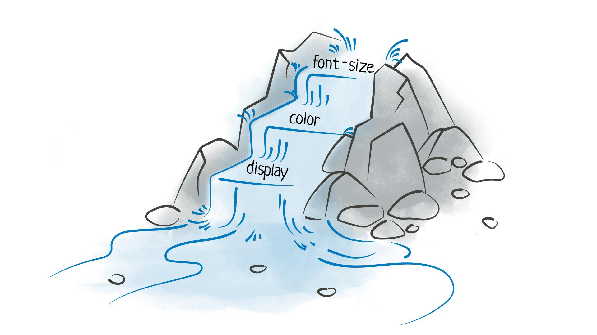

Введение
Данная страничка посвящена формальному языку описания внешнего вида веб-страниц в браузере CSS и его препроцессору SCSS. Здесь можно найти ответы на главные вопросы: что такое CSS, SCSS, для чего они нужны и где применяются?
Что такое CSS?

Как и HTML, CSS на самом деле не является языком программирования. Это не язык разметки - это язык таблицы стилей (CSS - Cascading Style Sheets, каскадные таблицы стилей). Это одна из базовых технологий в современном интернете. Практически ни один сайт не обходится без CSS, поэтому HTML и CSS действуют в единой связке.
Теперь ответим на вопрос о том, что делает CSS. Всё просто: если HTML структурирует контент на странице, то CSS позволяет отформатировать его, сделать более привлекательным для читателя. Изначально веб-разработчики использовали исключительно HTML — так было на заре развития интернет-технологий. С помощью разметки можно было выделить параграф, заголовок, изменить начертание текста. А большего и не требовалось. Со временем этих возможностей стало мало — и появилась технология форматирования без изменения самого содержимого и структуры документа. CSS решил проблему «зоопарка» тегов форматирования, когда разные браузеры поддерживали разные теги. Их унификация и единая база упростили работу с веб-документами и облегчили жизнь веб-мастерам.
Подключение CSS к HTML-документу
Подключить CSS к HTML можно тремя способами:
- Внутри HTML-тега. Такой способ используется довольно редко и, как правило, для каких-то локальных целей. Реализуется он с помощью атрибута style. Код в этом случае выглядит следующим образом:
- Через тег <style>. Этот тег располагают в <head> документа. Код при этом имеет такую структуру:
- С помощью внешнего CSS-файла. Это наиболее распространенный вариант подключения, когда создается отдельный файл, которому присваивается имя, например, style.css. Это, по сути, текстовый документ, структура которого аналогична рассмотренной в предыдущем примере. Подключение к HTML-документу выполняется с помощью тега <link>, размещаемого в <head>. Выглядит это следующим образом:
Синтаксис CSS
У языка CSS относительно простой синтаксис. Сначала прописывается селектор — он выбирает конкретный элемент на странице. Потом, после фигурных скобок, указываются свойства со значениями — между ними ставится двоеточие. Сами свойства отделяются друг от друга точкой с запятой.
Cелектор в CSS - это конструкция, которая позволяет выбрать отдельные или однотипные элементы на странице, чтобы их стилизовать. С селектора начинается каждый блок объявлений в CSS:
В качестве селектора в примере используется my-class. Все элементы с этим классом получают единое оформление — желтый фон цвета yellow.
Наследование в CSS
Все свойства CSS делятся на те, которые наследуются элементами-потомками от своих элементов-предков, и те, которые не наследуются. Так, например, если для параграфа задать границу (сформировать рамку), то все вложенные в него элементы (элементы-потомки) не унаследуют это свойство CSS, поскольку в данном случае наследование не имеет положительного эффекта. Но, если задать для абзаца, например, синий цвет шрифта, то он будет унаследован всеми элементами потомками до тех пор, пока его не переопределить для конкретного элемента, а это эффективнее, чем определять шрифт отдельно для каждого элемента-потомка. Узнать, какие стилевые свойства наследуются, а какие нет, можно в справочнике.
Каскады и приоритеты в CSS
Каскадирование стилей – это встроенная особенность CSS, которая заключается в том, что если к элементу применяется сразу несколько стилей, то результирующий стиль будет сформирован из всех присутствующих в этих стилях видов свойств, при чем в случае наличия двух или более одинаковых свойств к элементу будет применено значение свойства с наибольшим в данной ситуации приоритетом.
Если к одному и тому же элементу применяются два правила, содержащие одинаковые свойства CSS, но имеющие разные значения, возникает конфликт, который может быть решен при помощи сравнения специфичности селекторов этих правил. В результате этого решения к элементу будет применено свойство правила, у которого специфичность селектора больше.
Расчет специфичности селектора производится при помощи трех чисел (a, b, c). Происходит это следующим образом:
- числу a присваивается количество идентификаторов в селекторе;
- числу b присваивается суммарное количество классов, атрибутов и псевдоклассов в селекторе;
- числу c присваивается суммарное количество элементов и псевдоэлементов.
После подсчета чисел у всех сравниваемых селекторов, селектором с большей специфичностью будет считаться тот, у которого больше число a, в независимости от величины чисел b и c. Если же у сравниваемых селекторов число a окажется одинаковым, будет сравниваться их число b, а в случае необходимости и число c.
Иерархия приоритетов в CSS работает следующим образом:
- Самый высокий приоритет у свойств, в конце объявления которых указано !important.
- Затем идут инлайновые стили, которые прописываются в теге через атрибут style.
- Ещё ниже приоритет стилей, заданных в теге style в самом документе.
- Далее следуют стили, подключённые к документу как внешний CSS-файл с использованием тега link.
Что такое SCSS/SASS?

SCSS — это препроцессор для написания CSS кода. SCSS дает дополнительные возможности. С ним можно использовать переменные, вложенные селекторы и медиазапросы, собирать несколько файлов в один, миксины, наследования и другие полезные вещи которые упростят и структурируют работу с CSS кодом.
SCSS пишется в отдельных файлах с расширением .scss, например main.scss. SCSS не подключается в браузер напрямую. Браузеры не умеют с ним работать. SCSS компилируется (собирается) в привычный для браузера CSS код, и уже CSS файл подключается на страницу. Для того чтобы скомпилировать SCSS в CSS нужно использовать компилятор. Это может быть специальная программа. Либо плагин для редактора. Или инструмент для сборки проекта: Gulp, Webpack или другой.
Особенности SCSS:
- Это отдельный формат файла
- Пишется в отдельных файлах с расширением .scss
- SCSS не подключается в браузер напрямую
- SCSS надо компилировать в CSS
- Дает возможность использовать переменные, вложенные селекторы и медиазапросы, собирать несколько файлов в один, миксины, наследования и многое другое чтобы структурировать работу с CSS кодом
Сравнение CSS и SCSS
- Scss позволяетвкладывать правила CSS друг в друга. Вложенные правила применяются только для элементов, соответствующих внешним селекторам. Например:
- Иногда полезно использовать родительский селектор с другим предназначением, чем по умолчанию. В этих случаях, с помощью символа & вы можете явно указать, где должен быть вставлен родительский селектор, например:
- Использование миксина. Миксины вызываются в документ директивой @include. Она принимает имя миксина и, опционально, передаваемые в него аргументы, включает стили, определённые этим миксином, в текущее правило. Например:
Еще больше информации по SCSS/SASS можно посмотреть на официальном сайте продукта.